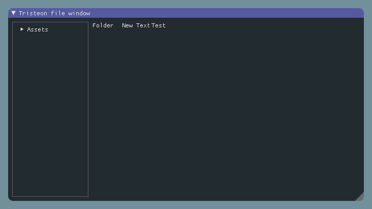

Immediate versus retained mode
In an immediate mode UI, widgets are function calls made every frame that draw the widget and return its input at once; hiding a panel means not calling it. In a retained mode UI, widgets are created once as objects and changed through callbacks and events. The prototypes and Tristeon's editor use Dear ImGui, an immediate mode library.
The asset browser scans the project's Assets folder: a folder tree on the left, and the contents of the selected folder on the right.

Type registration
C++ has no reflection, so a deserializer can't create an object from a type name on its own. Each serializable type registers a factory function in a static map under its name, and deserialization looks the name up and calls the factory. Tristeon's reflection uses the same structure.
template <typename T> Serializable* CreateInstance() { return new T; }
struct TypeRegister
{
using TypeMap = std::map<std::string, Serializable*(*)()>;
static Serializable* createInstance(const std::string& s)
{
const auto it = getMap()->find(s);
if (it == getMap()->end())
return nullptr;
return it->second();
}
inline static TypeMap* getMap()
{
static TypeMap instance;
return &instance;
}
};
template <typename T>
struct DerivedRegister : TypeRegister
{
DerivedRegister(const std::string& s)
{
getMap()->emplace(s, &CreateInstance<T>);
}
};